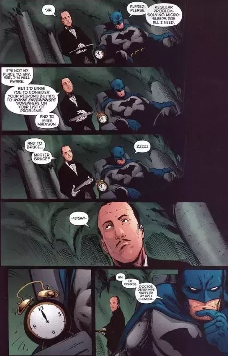

Quem sou eu?
O meu nome é Zidane e sou um estudante em Lisboa.
Sempre fui fascinado em aumentar a eficácia do corpo humano e algo que aumentaria tremendamente a sua eficácia seria poupar o máximo de tempo possível.
Encontrei esta ideia quando lia uma comic do Batman, que referia que ele fazia micro-sleep (conceito teórico), que consiste em naps de 1-5 minutos por dia quando necessário.

Depois de alguma pesquisa, descobri que o micro-sleep era um padrão não realista, mas descobri o método de Polyphasic Sleep. Isto foi à 2 anos atrás.
Infelizmente, devido à escola não consegui adaptar padrões mais extremos, como o Dymaxion, Uberman e o Spamayl. Mas pretendo adaptar pelo menos o Dymaxion até aos 25 anos de idade, depois da universidade.
{kind=link}
{kind=link}
Atualmente, o meu padrão de sono é o Byphasic 20 minute nap.
{kind=link}
Claro que existem outras maneiras de poupar tempo, mas a que é mais eficaz, poupando mais tempo que qualquer outro método, é o Polyphasic Sleep, sem qualquer sombra de dúvida.